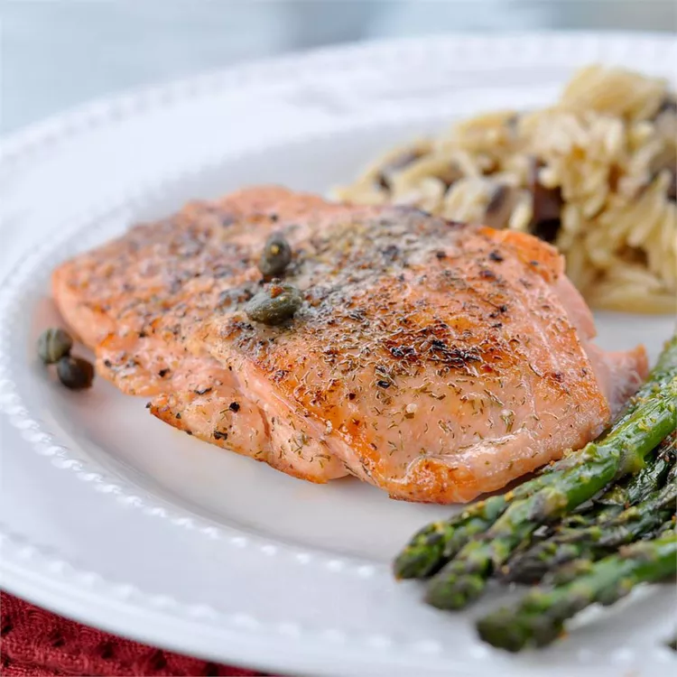

Pan-Seared Salmon

Learn how long to cook salmon on the stove with this easy pan-seared salmon recipe. The salmon fillets are simply seasoned with salt, pepper, and capers. Garnish with slices of lemon.
Ingridients
- 4 (6 ounce) fillets salmon
- 2 tablespoons olive oil
- 2 tablespoons capers
- ⅛ teaspoon salt
- ⅛ teaspoon ground black pepper
- 4 slices lemon
Step 1
Preheat a large heavy skillet over medium heat for 3 minutes.
Step 2
Coat salmon fillets with olive oil; place skin-side down in the preheated skillet and increase heat to high. Sprinkle with capers, salt, and pepper; cook for 3 minutes on one side. Turn salmon fillets over; continue to cook until salmon flakes easily with a fork, about 5 minutes.
Step 3
Transfer salmon to individual plates and garnish with lemon slices.
Main page Garlic Chicken Fried Brown Rice Pan-Seared Salmon Instant Pot Vegan Cabbage Detox Soup Start of page